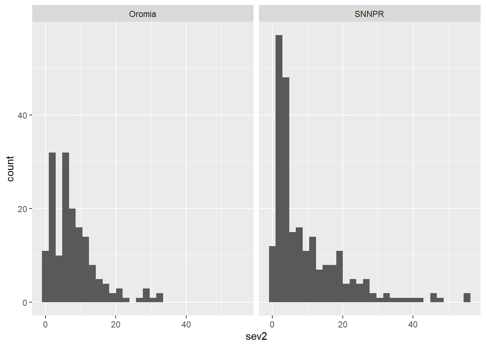
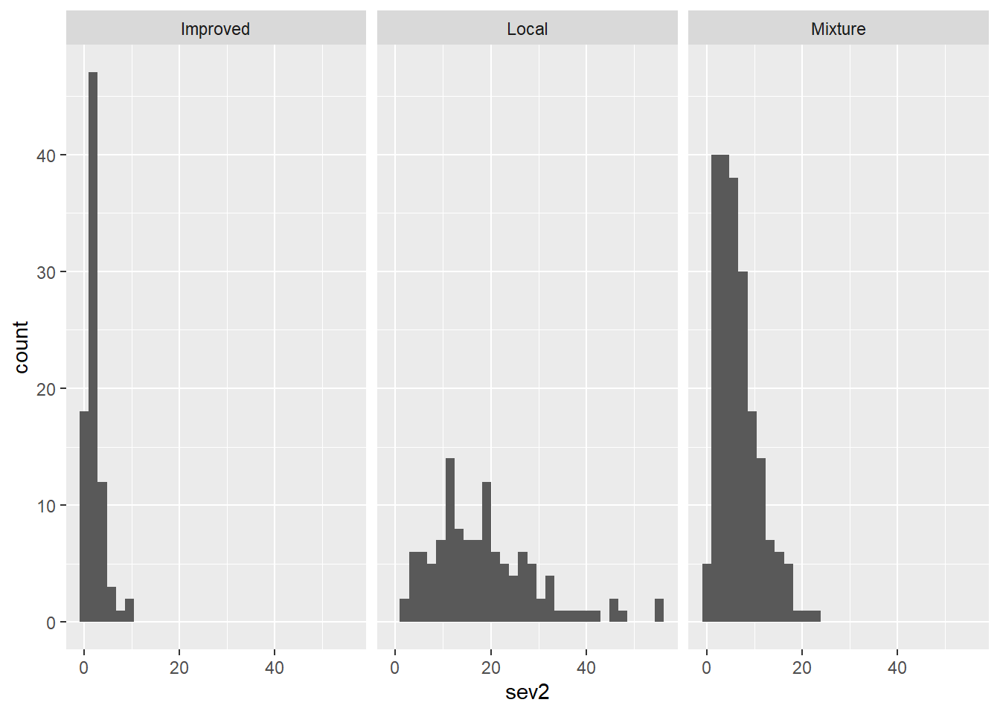

library(tidyverse)
library(ggplot2)
library(ggthemes)
library(patchwork)Aula 3
Nesa aula, serão apresentadas ferramentas para se realizar uma análise descritiva do conjunto de dados. Além disso, o pacote tidyverse será utilizado para manipulação, criação de subconjuntos e organização dos dados. Por fim, ao longo da aula será demonstrado como criar gráficos simples.
Carregando pacotes, importando os dados e resumo estatístico
Primeiro, será feito o carregamento dos pacotes:
Os dados utlizados serão importados de um arquivo .csv disponível em nuvem.
Resumidamente, o arquivo traz valores de incidência e severidade da ferrugem do cafeeiro em diferentes regiões da Etiópia, de acordo com o sistema de cultivo, manejo da fazenda, sombreamento, cultivar, etc.:
cr <- read_csv("https://raw.githubusercontent.com/emdelponte/paper-coffee-rust-Ethiopia/master/data/survey_clean.csv")
Para uma visualização rápida dos dados, será utilizada a função glimpse:
glimpse(cr)Rows: 405
Columns: 13
$ farm <dbl> 1, 2, 3, 4, 5, 6, 7, 8, 9, 10, 11, 12, 13, 14, 15, 16,…
$ region <chr> "SNNPR", "SNNPR", "SNNPR", "SNNPR", "SNNPR", "SNNPR", …
$ zone <chr> "Bench Maji", "Bench Maji", "Bench Maji", "Bench Maji"…
$ district <chr> "Debub Bench", "Debub Bench", "Debub Bench", "Debub Be…
$ lon <dbl> 35.44250, 35.44250, 35.42861, 35.42861, 35.42861, 35.3…
$ lat <dbl> 6.904722, 6.904722, 6.904444, 6.904444, 6.904444, 6.90…
$ altitude <dbl> 1100, 1342, 1434, 1100, 1400, 1342, 1432, 1100, 1400, …
$ cultivar <chr> "Local", "Mixture", "Mixture", "Local", "Local", "Mixt…
$ shade <chr> "Sun", "Mid shade", "Mid shade", "Sun", "Sun", "Mid sh…
$ cropping_system <chr> "Plantation", "Plantation", "Plantation", "Plantation"…
$ farm_management <chr> "Unmanaged", "Minimal", "Minimal", "Unmanaged", "Unman…
$ inc <dbl> 86.70805, 51.34354, 43.20000, 76.70805, 47.15808, 51.3…
$ sev2 <dbl> 55.57986, 17.90349, 8.25120, 46.10154, 12.25167, 19.91…
A seguir, uma breve descrição estatística dos valores de incidência, com uso da função summary:
summary(cr$inc) Min. 1st Qu. Median Mean 3rd Qu. Max.
9.50 19.43 32.50 34.89 48.20 86.71
Dos valores de severidade, com uso da função summary:
summary(cr$sev2) Min. 1st Qu. Median Mean 3rd Qu. Max.
0.2248 2.6892 5.9490 9.0945 12.1593 55.5799 Resumo gráfico geral do dataset
Para uma visualização gráfica dos valores de incidência será criado um histograma:
cr %>%
ggplot(aes(x = inc))+
geom_histogram ()
No histograma gerado, é possível notar que os valores de incidência apresentam três picos (ou seja, são valores de incidência com maior frequência). Além disso, a incidência aparenta não seguir distribuição normal, uma vez que o histograma apresenta um deslocamento à esquerda.
É possível criar histogramas por algum critério, por exemplo, as regiões.
Para isso, será utilizada a função facet_wrap:
cr %>% ggplot(aes(x = inc))+
geom_histogram()+
facet_wrap(~region)
Ao analisar os histogramas em função das regiões, é possível notar que na região de Oromia, os valores de incidência são mais frequentes em torno do centro da distribuição. Já na região de SNNPR, as incidências mais frequentes são inferiores a 25%.
Também serão criados boxplots, divididos por regiões:
cr %>% ggplot(aes(x = inc,))+
geom_boxplot()+
facet_wrap(~region)+
coord_flip()+
labs (x = "Incidence (%)")Estatistícas descritivas dos dados por variável
Para o agrupamento dos valores em função de uma variável, utiliza-se a função group_by:
Análise da incidência
cr %>% group_by(cultivar) %>%
summarise(inc_mean = mean(inc),
inc_median = median(inc),
sd_mean = sd(inc))# A tibble: 3 × 4
cultivar inc_mean inc_median sd_mean
<chr> <dbl> <dbl> <dbl>
1 Improved 16.4 15.2 5.66
2 Local 53.4 50.9 14.3
3 Mixture 31.9 31.6 11.2 Comparação da incidência versus severidade
Para avaliar a correlação de duas variáveis respostas, é possível lançar mão de um gráfico de pontos, plotando nos eixos as variáveis desejadas:
cr %>%
ggplot(aes(x = inc, y = sev2))+
geom_point()+
labs(x = "Incidence (%)",
y = "Severity (%)")No gráfico gerado é possível observar que há alta correlação positiva entre as variáveis severidade e incidência.
Análise da severidade
Serão realizadas análises de severidade em função da região e, em seguida, da cultivar. Para isso, a função group_by será utilizada mais uma vez.
Severidade por região
Para conhecer a média, desvio-padrão e mediana será utilizada a função summarise:
cr %>% group_by(region) %>%
summarise(mean_sev = mean(sev2),
med_sev = median(sev2),
sev_sd = sd(sev2))# A tibble: 2 × 4
region mean_sev med_sev sev_sd
<chr> <dbl> <dbl> <dbl>
1 Oromia 8.06 6.23 6.82
2 SNNPR 9.81 4.88 10.5
Em sequência, serão gerados histogramas por região utilizado a função face_wrap:
cr %>%
ggplot(aes(sev2))+
geom_histogram()+
facet_wrap(~region)
Severidade por cultivar
Seguindo a mesma lógica do item anterior, será feito avaliação da severidade por cultivares:
cr %>%
group_by(cultivar) %>%
summarise(mean_sev = mean(sev2),
med_sev = median(sev2),
sd_sev = sd(sev2))# A tibble: 3 × 4
cultivar mean_sev med_sev sd_sev
<chr> <dbl> <dbl> <dbl>
1 Improved 2.16 1.64 1.82
2 Local 18.7 17.2 11.1
3 Mixture 6.47 5.43 4.35cr %>%
ggplot(aes(sev2))+
geom_histogram()+
facet_wrap(~cultivar)
Severidade por região e cultivar
Agora, será gerado um histograma da severidade em função de duas variáveis independentes, a região e a cultivar. Nesse caso, primeiro será utilizada a função facet_wrap e depois a função facet_grid:
cr %>% ggplot(aes(x = sev2))+
geom_histogram()+
facet_wrap(region ~ cultivar)cr %>%
ggplot(aes(sev2))+
geom_histogram()+
facet_grid(~region~cultivar)
É possível notar que com a função facet_grid, o plot se torna mais harmônico…
g1 <- cr %>% ggplot(aes(x = sev2, fill = region))+
geom_histogram(color = "white")+
facet_grid(region ~ cultivar)+
#scale_fill_manual(values = c("blue", "red"))+ #Para atribuir cores manualmente.
theme(legend.position = "bottom")+
labs(x = "Frequency",
y = "Severity (%)",
fill = "Region")
Para salvar o plot gerado:
ggsave("cr.png", bg = "white")Criando subconjuntos
Para criação de subconjuntos, serão utilizadas duas funções: select e filter.
A função select faz seleção das colunas em que se deseja trabalhar. Para utilizar essa função, basta colocar como argumentos os títulos das colunas que serão selecionadas.
já a função filter é responsável por buscar e filtrar, nas linhas, uma informação de interesse. Nesse caso, inicialmente é preciso indicar em qual coluna será feito o filtro, em seguida é indicada a informação de interesse.
Importante: para o que software busque essa informação é preciso utilizar ==.
Serão criados dois subconjuntos apresentando a severidade em função das regiões.
Oromia <- cr %>%
select(farm, region, cultivar, sev2) %>%
filter(region == "Oromia")
SNPPR <- cr %>%
select(farm, region, cultivar, sev2) %>%
filter(region == "SNNPR")Visualizando os subconjuntos graficamente:
Para visualizar os subconjuntos recém-criados:
g1 <- Oromia %>%
ggplot(aes(cultivar, sev2, fill = cultivar))+
geom_boxplot()+
labs(title = "Oromia",
x = "Cultivar",
y = "Severity (%)")
g1g2 <- SNPPR %>%
ggplot(aes(cultivar, sev2, fill = cultivar))+
geom_boxplot()+
labs(title = "SNPPR",
x = "Cultivar",
y = "Severity (%)")
g2Criando uma figura combinando os dois gráficos
Para criar uma figura combinando os dois gráficos gerados anteriormente, será utilizado o pacote patchwork. É possível plotar um gráfico sobre outro
(g1/g2) + plot_layout(guides = "collect")Ou então um gráfico ao lado do outro
(g1+g2) +
plot_layout(guides = "collect")+
plot_annotation(tag_levels = "A") #Para deixar mais apresentável, é possível remover o título colocado no gráfico anteriormente.Também é possível inverter o modo como o boxplot é plotado, utilizando a função coord_flip:
g3 <- Oromia %>%
ggplot(aes(cultivar, sev2, fill = cultivar))+
geom_boxplot()+
labs(x = "",
y = "Severity (%)")+
theme_classic()+
coord_flip()
g3g4 <- SNPPR %>%
ggplot(aes(cultivar, sev2, fill = cultivar))+
geom_boxplot()+
labs(x = "",
y = "Severity (%)")+
theme_classic()+
coord_flip()
g4(g3 / g4) +
plot_layout(guides = "collect", axis_titles = "collect")+
plot_annotation(title = "Severity of coffee leaf rust in Ethiopia",
tag_levels = "A")Para o salvar o gráfico criado:
ggsave("grap2.png", width = 10, height = 8)Além disso, o pacote patchwork permite plotar um gráfico dentro do outro.
Por exemplo, será criado uma figura apresentando um boxplot da severidade da ferrugem na região de Oromia em função das cultivares e também será apresentado um histograma da severidade nesta região:
g5 <- Oromia %>%
ggplot(aes(cultivar, sev2, fill = cultivar))+
geom_boxplot()+
labs(x = "",
y = "Severity (%)",
fill = "Cultivar")+
theme_classic()+
coord_flip()
g5g6 <- Oromia %>%
ggplot(aes(x = sev2))+
geom_histogram()+
labs(x = "", y = "")+
theme_classic()
g6g5 + inset_element(g6, left = 0.5, bottom = 0.5, right = 1, top = 1)